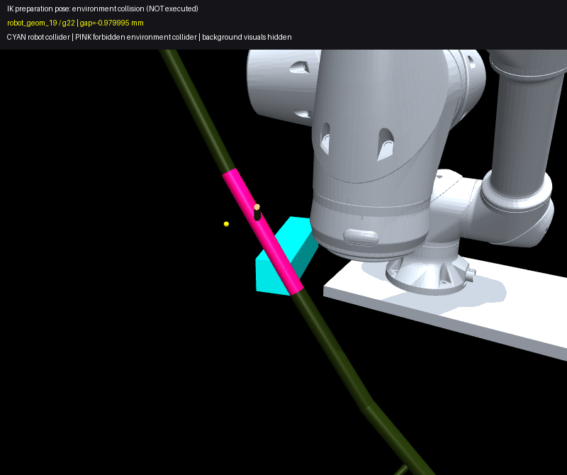
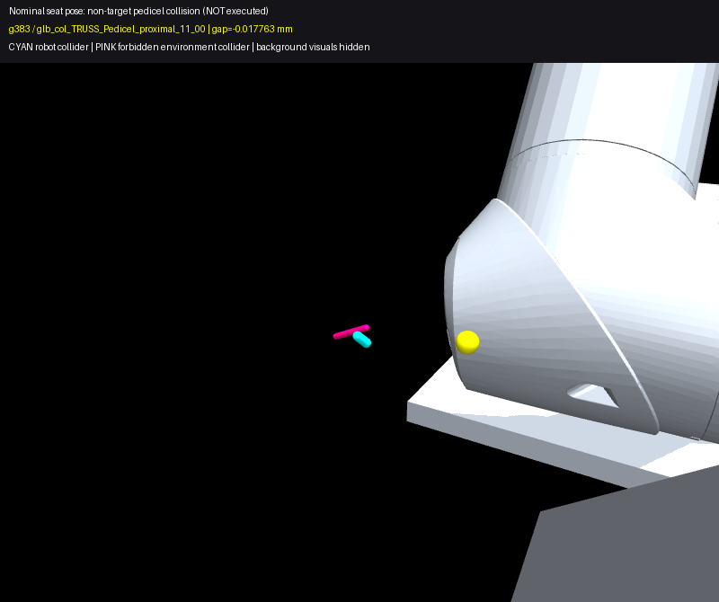

손목2 −7.2°로 초기 충돌 해소. 28개 시작 자세 검사 / 12개 정적 통과 / 상위6개 hold 검사. 선택 자세는 2초 물리 정상, 로봇 drift 0, 식물 최대 변위 2.968mm.
6개 질의(2타깃 × 3자세)의 18개 접근 경로 검사 통과. 전체 조작 경로 통과 0, 수확 물리 실행 0. 18개 branch의 suffix는 환경 차단14 / 자기충돌1 / 전체 검사 시간한도 미완료3. 유한 탐색 결과이며 수확 불가능 판정이 아님.
왼쪽은 과거 원본 시작 자세의 물리 기록, 오른쪽은 이번 canonical 자세의 새 물리 기록. 동일 covered MJB. 충돌체를 보기 위해 배경 시각 메시만 숨김.
청록: 로봇 충돌체 / 분홍: 금지 장애물. 저장 명령 q를 설정한 기하 진단 이미지.


| query | 접근 branch 통과 | 병목 | 전체 통과 / 물리 |
|---|---|---|---|
| q00_scene_0000_Tomato_01_recorded | 0 | 8 IK seed 내 충돌 없는 준비 자세 해 미발견 | 0 / 미실행 |
| q01_scene_0003_Tomato_01_recorded | 0 | 8 IK seed 내 충돌 없는 준비 자세 해 미발견 | 0 / 미실행 |
| q02_scene_0004_Tomato_01_recorded | 0 | 8 IK seed 내 충돌 없는 준비 자세 해 미발견 | 0 / 미실행 |
| q03_scene_0005_Tomato_01_recorded | 0 | 8 IK seed 내 충돌 없는 준비 자세 해 미발견 | 0 / 미실행 |
| q04_scene_0004_Tomato_08_recorded | 3 | branch 0: seat: glb_col_TRUSS_Pedicel_proximal_11_00 branch 1: suffix 자기충돌: seat branch 2: seat: glb_col_TRUSS_Pedicel_proximal_11_00 | 0 / 미실행 |
| q05_scene_0004_Tomato_08_neutral | 3 | branch 0: insert: glb_col_Tomato_10 branch 1: insert: glb_col_Tomato_10 branch 2: insert: glb_col_Tomato_10 | 0 / 미실행 |
| q06_scene_0004_Tomato_08_neutral_pitch15 | 3 | branch 0: insert: glb_col_Tomato_10 branch 1: insert: glb_col_Tomato_10 branch 2: insert: glb_col_Tomato_10 | 0 / 미실행 |
| q07_scene_0000_Tomato_08_recorded | 3 | branch 0: insert: glb_col_Tomato_10 branch 1: insert: glb_col_Tomato_10 branch 2: 전체 검사 미완료: LimitReached: overall_planning_deadline | 0 / 미실행 |
| q08_scene_0000_Tomato_08_neutral | 3 | branch 0: insert: glb_col_Tomato_10 branch 1: insert: glb_col_Tomato_10 branch 2: 전체 검사 미완료: LimitReached: overall_planning_deadline | 0 / 미실행 |
| q09_scene_0000_Tomato_08_neutral_pitch15 | 3 | branch 0: insert: glb_col_Tomato_10 branch 1: insert: glb_col_Tomato_10 branch 2: 전체 검사 미완료: LimitReached: overall_planning_deadline | 0 / 미실행 |
| q10_scene_0000_Tomato_01_side_control | 0 | 8 IK seed 내 충돌 없는 준비 자세 해 미발견 | 0 / 미실행 |
최종 집계 JSON · 호환 수정 후 완료 · 11개 계획 결과 · 새 접근 명령 해시 · 선택 시작 자세
원본 one-command 출력과 4건의 pre-IK 오류를 보존했고, 호환 수정 후 해당 4건만 같은 입력·예산으로 이어 실행함. 고유 설계 11개, adapter 호출 15회.